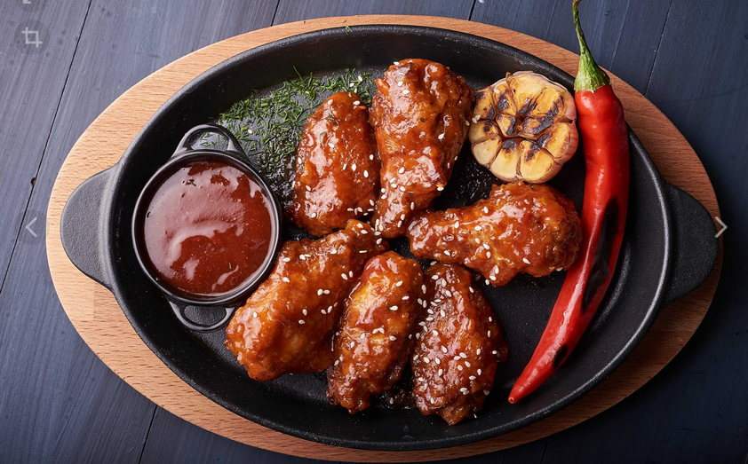

Japanese chicken wings

Ingredients
- 3 pounds chicken wings
- 1 egg, lightly beaten
- 1 cup all-purpose flour for coating
- 1 cup butter
Sauce
- 3 tablespoons soy sauce
- 3 tablespoons water
- 1 cup white sugar
- ½ cup white vinegar
- ½ teaspoon garlic powder, or to taste
- 1 teaspoon salt
Directions
- Preheat oven to 350 degrees F (175 degrees C).
- Cut wings in half, dip in egg and coat with flour.
- Heat butter in a large, deep skillet over medium-high heat. Fry wings until deep brown. Place in a shallow roasting pan.
- In a small bowl combine soy sauce, water, sugar, vinegar, garlic powder and salt. Pour over wings.
- Bake in preheated oven for 30 to 45 minutes, basting wings with sauce often.